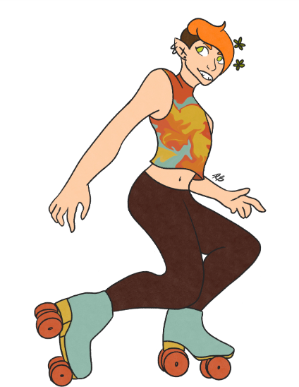
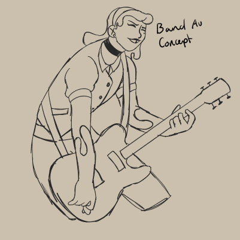
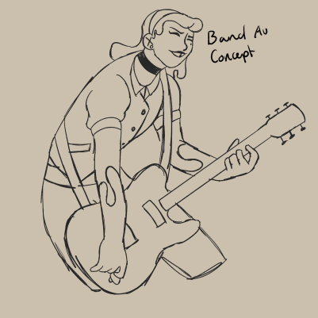
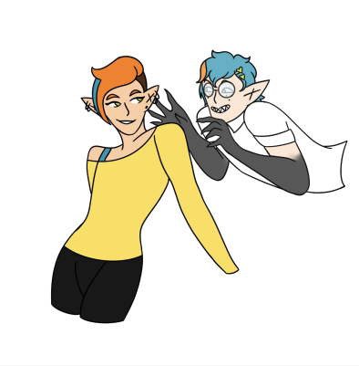
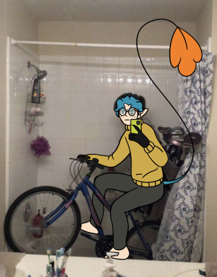

Skeletal
Skeletal was one of my first ocs to actually become something more than just a doodle. Originally she was my persona, the person I both wanted to look like and be. My first drawing of her actually dates back to the start of eighth grade during the lockdown. I could lament for days about how she has changed over the years, but no one wants to hear that. She was my out for a long time, but now I have been able to seperate myself from that and simply enjoy developing and drawing my silly little characters. Her name is just something I pulled out of the back of my head so it's kinda random. Now it's kinda a running gag that my characters are all named after adjectives of a species (or any unusally fitting adjective) they don't belong to. There's lots to be said about pretty much every aspect of her, so I'll just say this: Yes, the orange is natural. No, she isn't an elf.


Squirt
Another one of my ocs that dates back from years and years ago. She was actually first drawn before Skeletal, if I remember correctly. She started out as a Bendy and the Ink Machine oc, but she stemmed into someone way more important as I had her interact with my other ocs. I actually wrote her and Skeletal's first meeting, if you're interested in that, you can find it here. Anyways, I've stuck with her for a long time now, and she is very near and dear to my heart. She has also had a ton of development happen and with it a crazy amount of redesigns. Most of them were only small changes like an adjusted color pallet. Her most recent ones include her tooth gap, mole, tattoo, and more than one outfit finally. I cooked with her hair design tho, that has remained almost exactly the same, with a few different styles of course.

 

Nymph
Nymph is one of the characters I despised the most. Her original "concept", if you can even call it that anymore, was an MHA oc. She has probably changed the most out of all my characters, except Millie, which is it's own can of worms. She originally had feathered wings and a purple streak in her hair. As well, she had the ability to spin silk threads that she can control, also purple because I was desperate to tie her design together. I ended up abandoning this concept in pursuit of the celestial theme that she kinda had. She then turned into a butterfly thing with blue wings and the purple hair streak and silk strings turned gold with it. She basically had a massive overhaul. About half a year ago, I even gave her another redesign to base her more on a moth. I didn't want to base her wings off of one specific moth, so they take inspiration from many of them. She also now has (partially ripped off) antennae, but I forget to draw them so often that I'm genuinely considering scrapping them all the time. Also, she was subject of human expirimentation, which I can also totally go in depth to sometime, but she's not a fairy.
.webp)


Ghostly
Ghostly is a character that I don't honestly draw much. He was created to be Skeletal's little brother, so I based a lot of it off of my own brother. Somewhat due to sibling rivalry with my brohter, I killed off Ghostly for the sake of character development of Skeletal, and because it was the one time I made one of my character species match their name. Of course, now I rewrote some stuff to revive him, but keep the fact that he died at some point canon.
 Wolfish
Gotta be honest, I don't really have any storyt for Wolfish. They are a non-binary wooden posing doll with both strung and ball joints. They are Vampiric's roomate, but there's something more going on between them. Their design is pretty cool if I say so myself.


Vampiric
Girly pop has such a good design that I put all my credits in design and none in story. Basically, she's got a big ass mouth that requires her face to unhinge like a snake to fully open and it leaves a line across her cheeks when closed. And I gave her manidbals for some extra spice, but they can tuck up mostly under her lips to make it just look like fangs on her cheeks. I don't even know anymore.


Apocalyptic
Apocalyptc is a Resident Evil 7 oc that I made last summer. I don't care enough about this damn website to put all the lore into this text file so rip.